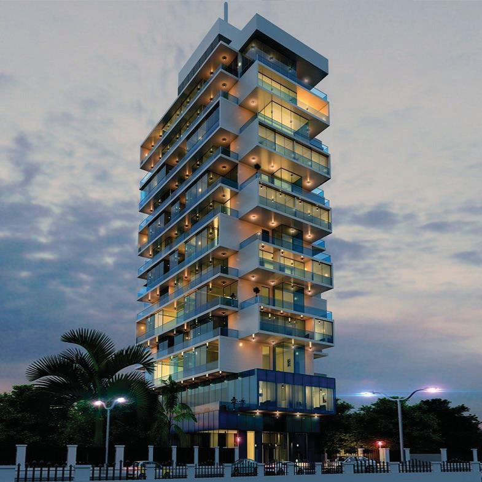

Experience the epitome of luxury and Ghanaian hospitality at Kempinski Gold Coast Hotel. Located on Accra's pristine shores, this five-star destination offers a seamless blend of modern elegance and traditional flair. Indulge in meticulously designed rooms and suites with breathtaking ocean or city views. Delight your taste buds with exquisite culinary creations, rejuvenate at the luxurious spa, and enjoy the outdoor pool and private beach. Kempinski Gold Coast Hotel provides versatile event spaces for unforgettable celebrations. Immerse yourself in Ghana's vibrant culture with personalized excursions. Allow the dedicated team to create extraordinary moments and surpass your expectations at this exceptional luxury retreat.
Welcome to the epitome of luxury and sophistication in Ghana - Mövenpick Ambassador Hotel. Situated in the heart of Accra, this renowned five-star hotel beckons you to experience a world of unparalleled comfort and impeccable service. Immerse yourself in the refined elegance of our exquisitely designed rooms and suites, indulge in gourmet dining experiences that tantalize your taste buds, and unwind at our state-of-the-art spa and fitness facilities. With its central location and uncompromising attention to detail, Mövenpick Ambassador Hotel offers an unrivaled urban oasis for discerning travelers. Discover a haven of tranquility and luxury that surpasses all expectations at Mövenpick Ambassador Hotel.
Nestled in the vibrant heart of the city, this five-star hotel invites you to experience a world of unparalleled comfort and personalized service. Immerse yourself in the contemporary elegance of our stylishly appointed rooms and suites, indulge in exquisite dining options that showcase local and international flavors, and rejuvenate your senses at our state-of-the-art wellness facilities. With its prime location and uncompromising attention to detail, Accra Marriott Hotel offers a haven of indulgence and relaxation for discerning travelers. Discover the epitome of refined luxury and warm Ghanaian hospitality at Accra Marriott Hotel.
As a prominent landmark in the city, this prestigious hotel offers a blend of modern elegance and warm Ghanaian hospitality. Immerse yourself in the comfort of our well-appointed rooms and suites, savor delectable culinary delights at our restaurants, and unwind with a refreshing cocktail at our vibrant bar. With its central location, Accra City Hotel provides easy access to the city's attractions and business districts. Experience a harmonious balance of comfort, convenience, and genuine hospitality at Accra City Hotel, your gateway to the vibrant capital of Ghana.
Welcome to Villa Monticello, a hidden gem of luxury and tranquility in the heart of Accra, Ghana. Discover a boutique hotel where personalized service and attention to detail redefine hospitality. Nestled in a serene enclave, Villa Monticello offers elegantly designed rooms and suites that exude charm and comfort. Indulge in exquisite dining experiences, where culinary creations tantalize your taste buds with a fusion of international and local flavors. Unwind in the oasis of our spa and wellness center, or simply bask in the beauty of our lush gardens. Experience a sanctuary of luxury and serenity at Villa Monticello, where every moment is curated for an unforgettable stay.

Welcome to Number One Oxford Street Hotel & Suites, a captivating blend of sophistication and comfort in the heart of Accra, Ghana. Step into a world of contemporary luxury where every detail is meticulously curated to surpass your expectations. Indulge in elegantly designed rooms and suites, offering a serene retreat from the bustling city. Delight your palate with tantalizing culinary creations at our world-class restaurants, and unwind with a refreshing drink at our stylish bar. Immerse yourself in the vibrant culture of Accra with our central location, placing you within easy reach of the city's attractions and business districts. Experience a truly remarkable stay at Number One Oxford Street Hotel & Suites, where luxury and convenience converge.
Welcome to Tang Palace, an oasis of luxury and Chinese elegance in the heart of Accra, Ghana. Experience a fusion of Ghanaian warmth and oriental charm at this prestigious five-star hotel. Indulge in exquisite accommodations adorned with traditional Chinese motifs, offering a tranquil sanctuary for relaxation. Delight your palate with authentic Chinese cuisine expertly prepared by our skilled chefs. Immerse yourself in a world of serenity at our spa and wellness center, where rejuvenation awaits. With its prime location and impeccable service, Tang Palace invites you to embark on a captivating journey of refined luxury and cultural immersion in the vibrant city of Accra